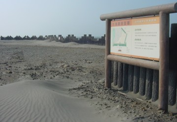
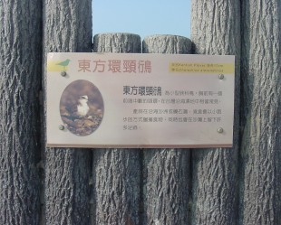
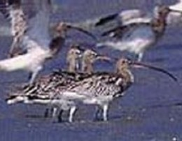
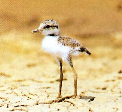
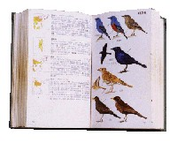
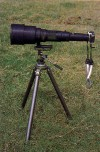

|
Hsien-Hsi is close to Taiwan Strait, and it owns rich natural resources. When the monsoon blows, the sand dune is changeable by time. In addition, hundreds of thousands of migrants fly to Taiwan during the winter and roost in the bushes and woods in Rouzongjiao beach or Changhua Coastal Industrial Park, such as Curlew, Dunlin, Kentish Plover, Black-Winged Stilt, Formosan Skylark, Common Kestrel, Herring Gull, and Gray Heron, etc. In addition, many migrants will stay here, such as Great Egret, Intermediate Egret, Little Egret and Black-crowned Night Heron.
|
|
 |
 |
The platform and the introduction to birds in Rouzongjaio Beach |
|
 |
Systematic name: Numenius arquata
Common name: Eurasian Curlew
Habitat: found on wetlands at beach
Eurasian Curlew belongs to winter migrant and the size is 60 cm. They often gather in tidal flats. They usually reach their long black bill into the mudflats and look for the crabs, shrimps and small fish. They are very vigilant. While looking for prey, they always look around. There are thousands of Curlews roosting in Rouzongjiao Beach each year. This is probably the biggest winter migrant group in pacific zone. Some people set their juveniles free in Sweden in 1926 and when the juveniles grew up and were shot in England in 1958, their health were still good. Obviously Curlew can live long. Because the quantity is scarce day after day, Curlew should be protected. |
 |
Systematic name: Charadrius alexandrinus
Common name: Kentish Plover
Habitat: found on wetlands at beach
The size is approximate 18 cm. It looks like Little Ringed Plover, but its body is bigger. The upper parts of the body are pale in color. The bill and legs are black. Males have a small white forehead, black forecrown band and a slightly reddish colored hindcrown in summer. Females don’t have the black forecrown band. In winter because females, males and juveniles all look similar, they are not easily to distinguish.
They are common winter migrants in Penghu. Because some Kentish Plover will stay to breed in Penghu, people can watch them in the entire year. |

(The picture was taken by Ying-Dian Lin and the copyright is allowed by him.) |
Systematic name: Egretta garzetta
Common name: Little Egret
Habitat: found on wetlands at beach
Little Egrets appear in the south Europe, Africa, china Taiwan, Japan and Australia. In Europe they are summer migrants and in Africa they are winter migrants. In the other area, they stay and breed. You can watch them appear in west Taiwan, but the Little Egrets are hard to watch in east Taiwan. They are most found in estuaries, mudflats, ponds mangroves and even canals. They build rough nests out of sticks. A wild variety of nesting sites are used, from trees and bushes to rocks. The male and female Little Egret communally nest, breed and hatch. The juvenile of Little Egret has black bill and legs. Its claw is green and the adult is dark red. In addition, Little Egret is smaller than other Egret and the color of its bill, legs and claw is different from Intermediate Egret and Great Egret. Most important, Intermediate Egret and Great Egret are winter migrants, but Little Egret is not.
|
 |
Systematic name: Nycticorax nycticorax
Common name: Black-crowned Night Heron
Habitat: found on wetlands at beach
Black-crowned Night Heron has short neck, blue-gray wings, black crown and back, black bill, white face, throat, foreneck, chest and belly and two long, white, fiamentous plumes extending from back of head in alternate plumage. They are found in ponds, mudflats or estuaries. They usually act at night, but still appear during the day. Sometimes they act individually, but they also can gather together to feed on at habitat. They nest with Little Egrets at the same place. They eat prey, such as fish, mollusks and shrimps. While feeding, they will stand in the water and look at the water. If the prey approach, they will directly eat it.
|
|
Keep in a laughing mood
A Bird is a small spirit of nature. And we can see if the ecological environment is good through its behaviors. They live around us. As long as we keep in a good mood, without any equipment, we can still get the interest and joy through observing them.
Bird (Checklist) Book
During birdwaiching, the first stage is called “watch the birds and does not know the birds.” A beginner needs a bird book, which exactly introduce the species of birds, habitats, geographic range, physical description, breeding and migration. According to the style of the edit and designation, there are tow kinds of checklists.
1. Bird Album
This style is printed according to the bird album and the picture is very similar with the real bird. It is suitable to the beginner. The weakness of this kind of book is not easy to point the identification and the change of the feather color by the season. In addition, this kind of book is printed with the special paper. When it gets wet, it will be sticky and damaged.
2. Bird Sketches
This style is printed according to the proportion to sketch. The same species of birds are put together. The strengths are the physical description, geographic range, and the species of birds included and to point the differences of similar species. It is suitable the advanced member to use.
When choosing the bird books, you should consider whether they are convenient to take with you. The book had better be bind in “rubber line” style to avoid the papers to drop out for a short time. In addition, the papers had better have the function of waterproof because the water will damage the book when you use outsides. These books can be bought in any bird associations in Taiwan or you can call to inquire first.
Notebook
You can have the habit to record your observation. This can help you understand the birds more. The notebook should be carried easily and bind well. You can record with a pencil.
An outfit for birdwatching
The wild birds have good and sensitive eyesight. If you wear the suitable outfit, you will observe them easily. You had better choose casual,comfortable, wear-resisting and rapidly dry materials. The color approaches the nature. Green, blue and gray are good. You should avoid bright red, bright yellow and bright purple because they will scare the birds. The vest of birdwatching is a good choice because it provides many big pockets to put many events in.

Fedora
You should choose the soft cap, below are the two purposes:
1. In order to hide the “human” appearance
2. The fedora can help to stop the sunlight, and then use the scopes to observe the birds
Backpack
The appropriate backpack can make you take the extra food, drinking water, rain gear, clothe and so on. Most important, you will have empty hands to operate the telescope and check the books.
Scopes
  The second stage of birdwatching is called “ watch birds and appreciate them.” The telescope is the essential accessory. They can be distinguished from their shape and have two kinds, single-barrel and double-barrel. The single-barrel usually can multiple higher and the body is bigger. It needs the three-leg stand to support. It is suitable to observe water birds. As to the double-barrel telescope, it is designed to hold in hands and the multiple is lower. In addition, its body is small and lighter. Therefore, it is suitable to take and observe anytime. The second stage of birdwatching is called “ watch birds and appreciate them.” The telescope is the essential accessory. They can be distinguished from their shape and have two kinds, single-barrel and double-barrel. The single-barrel usually can multiple higher and the body is bigger. It needs the three-leg stand to support. It is suitable to observe water birds. As to the double-barrel telescope, it is designed to hold in hands and the multiple is lower. In addition, its body is small and lighter. Therefore, it is suitable to take and observe anytime.
If these two kinds of telescopes are divided by their use frequency, single-barrel telescope is about 80% and double-barrel telescope is about 20%. Therefore, a beginner should purchase the double-barrel telescope first and buy the single-barrel one regarding individual need. Different telescopes have different functions. Birdwatching, hunting, astronomy, navigation and opera all need the telescopes with different function. Generally speaking, birdwatching and nature observation need higher optics quality and the price is a little expensive, but it is useful and cannot cause the damage to the eyes.
|
|